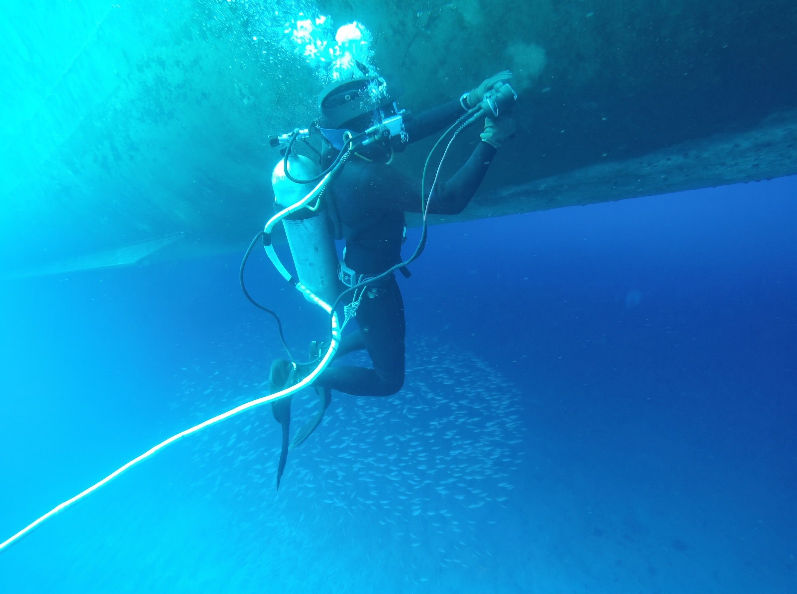

<meta charset="utf-8">
<meta name="viewport" content="width=device-width,initial-scale=1">
<title>Blue Ocean Diving · Operations</title>
<meta name="description" content="Underwater hull maintenance for large vessels. Fouling removal, in water, with zero delay." data-attr="content" data-pt="Manutencao subaquatica de grandes embarcacoes. Remocao de fouling, na agua, sem atraso." data-en="Underwater hull maintenance for large vessels. Fouling removal, in water, with zero delay.">
<link rel="preconnect" href="https://fonts.googleapis.com">
<link rel="preconnect" href="https://fonts.gstatic.com" crossorigin>
<link href="https://fonts.googleapis.com/css2?family=Archivo:wght@600;700;800&family=IBM+Plex+Sans:wght@400;500;600&family=IBM+Plex+Mono:wght@400;500&display=swap" rel="stylesheet">
<link rel="stylesheet" href="assets/style.css">

<header class="top" id="cab">
  <span class="rebite a"></span><span class="rebite b"></span>
  <span class="rebite c"></span><span class="rebite d"></span>

  <div class="placa">
    <div class="wrap">
      <i class="forte">Salvador &middot; Bahia &middot; Brasil</i>
      <i class="some">CNPJ 66.316.392/0001-00</i>
      <i class="some" data-pt="Manutenção subaquática de embarcações" data-en="Underwater vessel maintenance">Underwater vessel maintenance</i>
      <div class="lang">
        <button data-lang="en">EN</button>
        <button data-lang="pt">PT</button>
      </div>
    </div>
  </div>

  <div class="wrap top-in">
    <a class="brand" href="index.html">
      
      <span class="brand-name">BLUE OCEAN<span>Diving</span></span>
    </a>
    <button class="menu-toggle" aria-expanded="false" aria-label="Menu">MENU</button>
    <nav class="main">
      <a href="index.html" data-pt="Início" data-en="Home">Home</a>
      <a href="servicos.html" data-pt="Serviços" data-en="Services">Services</a>
      <a href="sobre.html" data-pt="A empresa" data-en="Company">Company</a>
      <a href="certificacoes.html" data-pt="Segurança" data-en="Safety &amp; Compliance">Safety &amp; Compliance</a>
      <a href="cobertura.html" data-pt="Cobertura" data-en="Coverage">Coverage</a>
      <a href="galeria.html" aria-current="page" data-pt="Operações" data-en="Operations">Operations</a>
      <a href="contato.html" data-pt="Contato" data-en="Contact">Contact</a>
    </nav>
  </div>
</header>

<section class="pagehead on-dark">
  <div class="wrap">
    <div class="kicker" data-pt="Operações" data-en="Operations">Operations</div>
    <h1 data-pt="O trabalho, como ele realmente é" data-en="The work, exactly as it is">The work, exactly as it is</h1>
    <p class="lede" data-pt="Site de serviço técnico com foto de banco de imagem entrega na hora que a empresa é nova. Esta página só existe com material real." data-en="A technical services site with stock photography gives away instantly that the company is new. This page only exists with real material.">A technical services site with stock photography gives away instantly that the company is new. This page only exists with real material.</p>
  </div>
</section>

<section>
  <div class="wrap">
    <div class="pranchas">
      <article class="prancha">
        <div class="pr-num">01</div>
        <figure class="pr-foto"></figure>
        <div class="pr-ficha">
          <p class="pr-leg" data-pt="Inspeção ao vivo, com o navio fundeado" data-en="Live inspection, vessel at anchor">Live inspection, vessel at anchor</p>
          <dl>
          <div class="pr-lin"><dt data-pt="Operação" data-en="Operation">Operation</dt><dd data-pt="Inspeção de casco" data-en="Hull inspection">Hull inspection</dd></div>
          <div class="pr-lin"><dt data-pt="Local" data-en="Location">Location</dt><dd data-pt="Porto de Salvador" data-en="Port of Salvador">Port of Salvador</dd></div>
          <div class="pr-lin"><dt data-pt="Método" data-en="Method">Method</dt><dd data-pt="Mergulho com suprimento de superfície" data-en="Surface supplied diving">Surface supplied diving</dd></div>
          <div class="pr-lin"><dt data-pt="Registro" data-en="Record">Record</dt><dd data-pt="Foto e vídeo" data-en="Photo and video">Photo and video</dd></div>
          </dl>
        </div>
      </article>
      <article class="prancha">
        <div class="pr-num">02</div>
        <figure class="pr-foto"></figure>
        <div class="pr-ficha">
          <p class="pr-leg" data-pt="Costado de graneleiro, Porto de Salvador" data-en="Bulk carrier alongside, Port of Salvador">Bulk carrier alongside, Port of Salvador</p>
          <dl>
          <div class="pr-lin"><dt data-pt="Embarcação" data-en="Vessel">Vessel</dt><dd data-pt="Graneleiro sob bandeira do Panamá" data-en="Panama-flagged bulk carrier">Panama-flagged bulk carrier</dd></div>
          <div class="pr-lin"><dt data-pt="IMO" data-en="IMO">IMO</dt><dd data-pt="9593828" data-en="9593828">9593828</dd></div>
          <div class="pr-lin"><dt data-pt="Local" data-en="Location">Location</dt><dd data-pt="Porto de Salvador" data-en="Port of Salvador">Port of Salvador</dd></div>
          <div class="pr-lin"><dt data-pt="Operação" data-en="Operation">Operation</dt><dd data-pt="Inspeção" data-en="Inspection">Inspection</dd></div>
          </dl>
        </div>
      </article>
      <article class="prancha">
        <div class="pr-num">03</div>
        <figure class="pr-foto"></figure>
        <div class="pr-ficha">
          <p class="pr-leg" data-pt="Limpeza de casco em operação" data-en="Hull cleaning under way">Hull cleaning under way</p>
          <dl>
          <div class="pr-lin"><dt data-pt="Operação" data-en="Operation">Operation</dt><dd data-pt="Limpeza de casco" data-en="Hull cleaning">Hull cleaning</dd></div>
          <div class="pr-lin"><dt data-pt="Equipamento" data-en="Equipment">Equipment</dt><dd data-pt="Máquina hidráulica de escova dupla" data-en="Two-brush hydraulic machine">Two-brush hydraulic machine</dd></div>
          <div class="pr-lin"><dt data-pt="Docagem" data-en="Drydocking">Drydocking</dt><dd data-pt="Nenhuma" data-en="None">None</dd></div>
          </dl>
        </div>
      </article>
      <article class="prancha">
        <div class="pr-num">04</div>
        <figure class="pr-foto"></figure>
        <div class="pr-ficha">
          <p class="pr-leg" data-pt="Polimento de hélice, com a embarcação na água" data-en="Propeller polishing, vessel still in the water">Propeller polishing, vessel still in the water</p>
          <dl>
          <div class="pr-lin"><dt data-pt="Operação" data-en="Operation">Operation</dt><dd data-pt="Polimento de hélice" data-en="Propeller polishing">Propeller polishing</dd></div>
          <div class="pr-lin"><dt data-pt="Equipamento" data-en="Equipment">Equipment</dt><dd data-pt="Politriz hidráulica" data-en="Hydraulic polisher">Hydraulic polisher</dd></div>
          <div class="pr-lin"><dt data-pt="Docagem" data-en="Drydocking">Drydocking</dt><dd data-pt="Nenhuma" data-en="None">None</dd></div>
          </dl>
        </div>
      </article>
    </div>
    </div>
  </div>
</section>

<section>
  <div class="wrap">
    <div class="stub">
      <h3 data-pt="Material necessário" data-en="Material needed">Material needed</h3>
      <p data-pt="Estrutura pronta. O conteúdo entra assim que a Mariana mandar o material desta página." data-en="Structure is ready. Content goes in as soon as Mariana sends the material for this page.">Structure is ready. Content goes in as soon as Mariana sends the material for this page.</p>
      <ul>
      <li data-pt="As <b>originais destas quatro</b>, mandadas como arquivo e não como foto. O WhatsApp comprimiu duas delas para 552 pixels, o que não aguenta meia página." data-en="The <b>originals of these four</b>, sent as a file and not as a photo. WhatsApp compressed two of them down to 552 pixels, which will not carry half a page.">The <b>originals of these four</b>, sent as a file and not as a photo. WhatsApp compressed two of them down to 552 pixels, which will not carry half a page.</li>
      <li data-pt="Casco antes e depois da limpeza, o par que mais convence" data-en="Hull before and after cleaning, the pair that convinces most">Hull before and after cleaning, the pair that convinces most</li>
      <li data-pt="Equipamento e embarcação de apoio no cais" data-en="Equipment and support boat at the quay">Equipment and support boat at the quay</li>
      <li data-pt="A equipe, de rosto. É a página que sustenta o argumento da experiência" data-en="The team, faces visible. It is the page that carries the experience argument">The team, faces visible. It is the page that carries the experience argument</li>
      <li data-pt="Se houver vídeo de inspeção, mesmo curto, vale mais que dez fotos" data-en="If there is inspection footage, even short, it is worth more than ten photographs">If there is inspection footage, even short, it is worth more than ten photographs</li>
      </ul>
    </div>
  </div>
</section>

<section class="cta">
  <div class="wrap cta-in">
    <div>
      <h2 data-pt="Precisa de um casco limpo antes da próxima viagem?" data-en="Need a clean hull before the next voyage?">Need a clean hull before the next voyage?</h2>
      <p class="lede" style="margin-top:16px" data-pt="Diga o porto, a janela e o tipo de embarcação. Respondemos com escopo e prazo." data-en="Tell us the port, the window and the vessel type. We come back with scope and schedule.">Tell us the port, the window and the vessel type. We come back with scope and schedule.</p>
    </div>
    <a class="btn btn-dark" href="contato.html" data-pt="Solicitar orçamento" data-en="Request a quote">Request a quote</a>
  </div>
</section>

<footer class="site">
  <div class="wrap">
    <div class="foot-grid">
      <div>
        
        <span class="brand-name" style="font-size:19px">BLUE OCEAN<span>Diving</span></span>
        <p style="margin-top:16px;max-width:34ch" data-pt="Manutenção subaquática de grandes embarcações. Base em Salvador, Bahia, Brasil." data-en="Underwater maintenance for large vessels. Based in Salvador, Bahia, Brazil.">Underwater maintenance for large vessels. Based in Salvador, Bahia, Brazil.</p>
      </div>
      <div>
        <h4 data-pt="Serviços" data-en="Services">Services</h4>
        <a href="servicos.html" data-pt="Limpeza de casco" data-en="Hull cleaning">Hull cleaning</a>
        <a href="servicos.html" data-pt="Polimento de hélice" data-en="Propeller polishing">Propeller polishing</a>
        <a href="servicos.html" data-pt="Inspeção subaquática" data-en="Underwater inspection">Underwater inspection</a>
        <a href="servicos.html" data-pt="Reparos na água" data-en="In-water repairs">In-water repairs</a>
      </div>
      <div>
        <h4 data-pt="Empresa" data-en="Company">Company</h4>
        <a href="sobre.html" data-pt="A empresa" data-en="About us">About us</a>
        <a href="certificacoes.html" data-pt="Segurança" data-en="Safety">Safety</a>
        <a href="cobertura.html" data-pt="Cobertura" data-en="Coverage">Coverage</a>
        <a href="galeria.html" data-pt="Operações" data-en="Operations">Operations</a>
      </div>
      <div>
        <h4 data-pt="Contato" data-en="Contact">Contact</h4>
        <a href="mailto:commercial@serviceocean.com.br">commercial@serviceocean.com.br</a>
        <a href="https://wa.me/5571991015763">+55 71 99101-5763</a>
        <p style="margin-top:14px"><span class="todo" data-pt="confirmar canais oficiais" data-en="confirm official channels">confirm official channels</span></p>
      </div>
    </div>
    <div class="foot-bottom">
      <span>© 2026 Blue Ocean Diving</span>
      <span data-pt="Rascunho de trabalho · não publicado" data-en="Working draft · not published">Working draft · not published</span>
    </div>
  </div>
</footer>
<script src="assets/i18n.js?v=2"></script>
